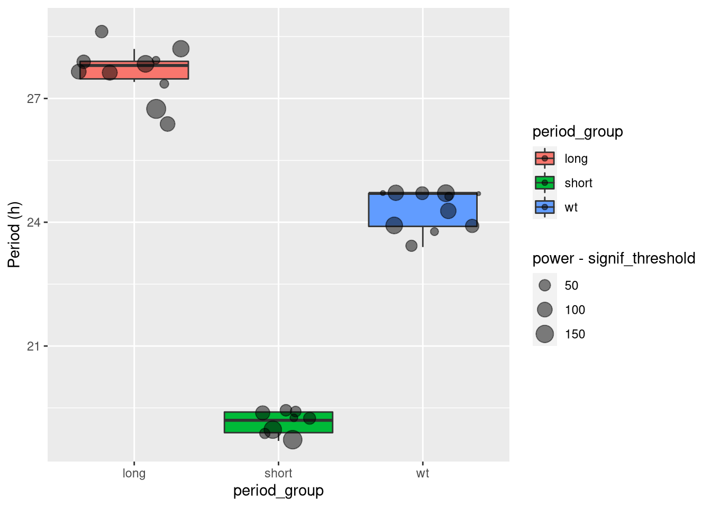

Circadian rhythm analysis
Aims
In this practical chapter, we will use a real experiment to learn how to:
- Use
zeitgebrto compute periodograms - Use ggetho to draw double plotted actograms
- Average periodograms vs conditions
- Find and compare peaks
Prerequisites
- You have read about behavr tables
- You are familiar with ggetho, our visualisation tool
- You have already read the damr tutorial
- Ensure you have installed
behavr,damr,ggethoandzeitgebrpackages
Background
This tutorial focuses on circadian rhythm in Drosophila, but can be adapted easily to investigate periodicity in different contexts.
In it, we will use a DAM dataset that is provided (and preloaded) within the damr package.
Getting the data
Getting the data is a lot simpler than in the other tutorials as it is already on your computer:
library(damr)
library(zeitgebr)
library(ggetho)
# We load the data
data(dams_sample)
# We copy the data to our own variable so we can alter it
dt <- copy(dams_sample) This data set is a recording of 32 animals, in DD. Let us print the metadata to understand the experiment a little bit:
summary(dt)## behavr table with:
## 32 individuals
## 6 metavariables
## 2 variables
## 4.1504e+05 measurements
## 1 key (id)print(dt[meta=T])## id file_info region_id
## 1: 2017-01-16 08:00:00|dams_sample.txt|01 <list[2]> 1
## 2: 2017-01-16 08:00:00|dams_sample.txt|02 <list[2]> 2
## 3: 2017-01-16 08:00:00|dams_sample.txt|03 <list[2]> 3
## 4: 2017-01-16 08:00:00|dams_sample.txt|04 <list[2]> 4
## 5: 2017-01-16 08:00:00|dams_sample.txt|05 <list[2]> 5
## ---
## 28: 2017-01-16 08:00:00|dams_sample.txt|28 <list[2]> 28
## 29: 2017-01-16 08:00:00|dams_sample.txt|29 <list[2]> 29
## 30: 2017-01-16 08:00:00|dams_sample.txt|30 <list[2]> 30
## 31: 2017-01-16 08:00:00|dams_sample.txt|31 <list[2]> 31
## 32: 2017-01-16 08:00:00|dams_sample.txt|32 <list[2]> 32
## experiment_id start_datetime stop_datetime
## 1: 2017-01-16 08:00:00|dams_sample.txt 2017-01-16 08:00:00 2017-01-26 00:09:00
## 2: 2017-01-16 08:00:00|dams_sample.txt 2017-01-16 08:00:00 2017-01-26 00:09:00
## 3: 2017-01-16 08:00:00|dams_sample.txt 2017-01-16 08:00:00 2017-01-26 00:09:00
## 4: 2017-01-16 08:00:00|dams_sample.txt 2017-01-16 08:00:00 2017-01-26 00:09:00
## 5: 2017-01-16 08:00:00|dams_sample.txt 2017-01-16 08:00:00 2017-01-26 00:09:00
## ---
## 28: 2017-01-16 08:00:00|dams_sample.txt 2017-01-16 08:00:00 2017-01-26 00:09:00
## 29: 2017-01-16 08:00:00|dams_sample.txt 2017-01-16 08:00:00 2017-01-26 00:09:00
## 30: 2017-01-16 08:00:00|dams_sample.txt 2017-01-16 08:00:00 2017-01-26 00:09:00
## 31: 2017-01-16 08:00:00|dams_sample.txt 2017-01-16 08:00:00 2017-01-26 00:09:00
## 32: 2017-01-16 08:00:00|dams_sample.txt 2017-01-16 08:00:00 2017-01-26 00:09:00
## period_group
## 1: long
## 2: long
## 3: long
## 4: long
## 5: long
## ---
## 28: wt
## 29: wt
## 30: wt
## 31: wt
## 32: wtWe can confirm we have 32 individuals.
They are described by one of three “period groups” (e.g. a genotype or treatment).
This is encoded in period_group metavariable can be either a “short”“,”long”” or wild-type (“wt”) period.
Quality control
This data is fairly clean already, so we will not do much. For most purposes, you can apply the same principles as data curation for sleep analysis.
Regime changes
In general (but not here), you will have a period of LD “baseline” preceding a change to a DD regime.
I suggest to encode that in the following way:
- Manually add a column
baseline_daysin your metadata that defines the number of days of baseline. - Sustract the number of baseline days to all time points:
dt[, t := t - days(xmv(baseline_days))]
As a result, t = 0 now means “ZT0 of the transition day”.
This makes a lot of sense as any baseline point is at a negative time (t < 0), whilst t > 0 is for DD.
The nice thing is that you can work with data (e.g. replicates) that have different baseline duration as now all time points are relative to the regime change.
Data enrichment
By defaut, DAM data only has variables t and activity. The latter being the number of beam crosses over a time bin (e.g. one minute). We could define a variable moving that is TRUE when and only when activity > 0, and FALSE otherwise:
dt[, moving := activity > 0]Overview plots
The first representation we show could be the activity of all animals over time in the same page. This would help to spot outliers. We simply do that with our tile plot. Note how we have changed the LD colours to grey and black, grey being for subjective days (remember, we are in DD).
ggetho(dt, aes(z=activity)) +
stat_ld_annotations(ld_colours = c("grey", "black"))+
stat_tile_etho() Note that you can substitute other variables you have in dt (e.g. moving) for activity.
We see that two animals (region 5 and 10) seem to have died/escaped before the end of the experiment. There is no right thing to do regarding dead animals. You could keep the data before death, or remove them altogether. It is eventually your responsibility to decide what to do with dead animals. Here, I simply remove data after death:
library(sleepr)
dt_curated <- curate_dead_animals(dt)
summary(dt_curated)## behavr table with:
## 32 individuals
## 6 metavariables
## 3 variables
## 4.06864e+05 measurements
## 1 key (id)ggetho(dt_curated, aes(z=activity)) +
stat_ld_annotations(ld_colours = c("grey", "black"))+
stat_tile_etho() 
Our curated data is now stored in dt_curated.
Double plotted actograms
At the moment, the id is a very long string (e.g. "2017-01-16 08:00:00|dams_sample.txt|01"). It has the advantage to be unambiguous, but it is difficult to plot.
To help plotting, we can make a new variable that is simply a different number for each individual. Lets call it uid:
dt_curated[, uid := 1 : .N, meta=T]
# We can map uid to id
dt_curated[, .(id, uid) ,meta=T]## id uid
## 1: 2017-01-16 08:00:00|dams_sample.txt|01 1
## 2: 2017-01-16 08:00:00|dams_sample.txt|02 2
## 3: 2017-01-16 08:00:00|dams_sample.txt|03 3
## 4: 2017-01-16 08:00:00|dams_sample.txt|04 4
## 5: 2017-01-16 08:00:00|dams_sample.txt|05 5
## ---
## 28: 2017-01-16 08:00:00|dams_sample.txt|28 28
## 29: 2017-01-16 08:00:00|dams_sample.txt|29 29
## 30: 2017-01-16 08:00:00|dams_sample.txt|30 30
## 31: 2017-01-16 08:00:00|dams_sample.txt|31 31
## 32: 2017-01-16 08:00:00|dams_sample.txt|32 32As you see, we do keep id as a reference but uid for convenience in graphs.
To make a double plotted actogram, we use ggetho.
Read more about that in the visualisation tutorial.
Briefly, we set multiplot to 2 (3 would be a triple plotted) one.
The variable of interest is on the z axis.
Note that instead of moving, you could plot raw activity.
Then, we use bar height to show the amount of movement (we could use stat_tile_etho which shows the variable of interest as a colour with pixel intensity).
Lastly, we split the graph by uid, so that each facet is a single animal.
ggetho(dt_curated, aes(z = moving), multiplot = 2) +
stat_bar_tile_etho() +
facet_wrap( ~ uid, ncol = 8)Interestingly, you can use formula in facet to show or sort with other metavariables:
ggetho(dt_curated, aes(z=moving), multiplot = 2) +
stat_bar_tile_etho() +
facet_wrap( ~ period_group + uid, ncol=8, labeller = label_wrap_gen(multi_line=FALSE))
Now, we know which genotype matches each uid.
In your own work, you could generalise this concept to display more metavariables.
For instance, if you had a sex metavariable you could do: facet_wrap( ~ period_group + sex + uid, ...).
Periodograms
Computation
An important part of circadian research is to compute the periodicity of the free running clock of multiple individuals.
Mathematically, we would like to build a preiodogram. That is, generally speaking, a representation of the density (i.e. power) of a signal at different periods (or frequencies).
In addition, a periodogram associates to each pair of power-period a significance level.
There are many algorithms to compute periodograms.
In zeitgebr, we have so far implemented:
ac_periodogram– An autocorrelation based methodls_periodogram– Lomb-Scargle algorithmchi_sq_periodogram– A \(\chi{}^2\) based one
See ?periodogram_methods for references.
In order to compute periodograms, we use the periodogram() function.
We need to define which variable we want to study (e.g. moving or activity).
Then, we provide our data.
The methods described above can be passed as an argument.
For instance, if we want to analyse, with the \(\chi{}^2\) method, activity:
per_xsq_dt <- periodogram(activity,
dt_curated,
FUN = chi_sq_periodogram)
per_xsq_dt##
## ==== METADATA ====
##
## id file_info region_id
## <fctr> <list> <int>
## 1: 2017-01-16 08:00:00|dams_sample.txt|01 <list[2]> 1
## 2: 2017-01-16 08:00:00|dams_sample.txt|02 <list[2]> 2
## 3: 2017-01-16 08:00:00|dams_sample.txt|03 <list[2]> 3
## 4: 2017-01-16 08:00:00|dams_sample.txt|04 <list[2]> 4
## 5: 2017-01-16 08:00:00|dams_sample.txt|05 <list[2]> 5
## ---
## 28: 2017-01-16 08:00:00|dams_sample.txt|28 <list[2]> 28
## 29: 2017-01-16 08:00:00|dams_sample.txt|29 <list[2]> 29
## 30: 2017-01-16 08:00:00|dams_sample.txt|30 <list[2]> 30
## 31: 2017-01-16 08:00:00|dams_sample.txt|31 <list[2]> 31
## 32: 2017-01-16 08:00:00|dams_sample.txt|32 <list[2]> 32
## experiment_id start_datetime stop_datetime
## <char> <POSc> <fctr>
## 1: 2017-01-16 08:00:00|dams_sample.txt 2017-01-16 08:00:00 2017-01-26 00:09:00
## 2: 2017-01-16 08:00:00|dams_sample.txt 2017-01-16 08:00:00 2017-01-26 00:09:00
## 3: 2017-01-16 08:00:00|dams_sample.txt 2017-01-16 08:00:00 2017-01-26 00:09:00
## 4: 2017-01-16 08:00:00|dams_sample.txt 2017-01-16 08:00:00 2017-01-26 00:09:00
## 5: 2017-01-16 08:00:00|dams_sample.txt 2017-01-16 08:00:00 2017-01-26 00:09:00
## ---
## 28: 2017-01-16 08:00:00|dams_sample.txt 2017-01-16 08:00:00 2017-01-26 00:09:00
## 29: 2017-01-16 08:00:00|dams_sample.txt 2017-01-16 08:00:00 2017-01-26 00:09:00
## 30: 2017-01-16 08:00:00|dams_sample.txt 2017-01-16 08:00:00 2017-01-26 00:09:00
## 31: 2017-01-16 08:00:00|dams_sample.txt 2017-01-16 08:00:00 2017-01-26 00:09:00
## 32: 2017-01-16 08:00:00|dams_sample.txt 2017-01-16 08:00:00 2017-01-26 00:09:00
## period_group uid
## <fctr> <int>
## 1: long 1
## 2: long 2
## 3: long 3
## 4: long 4
## 5: long 5
## ---
## 28: wt 28
## 29: wt 29
## 30: wt 30
## 31: wt 31
## 32: wt 32
##
## ====== DATA ======
##
## id period power signif_threshold
## <fctr> <num> <num> <num>
## 1: 2017-01-16 08:00:00|dams_sample.txt|01 57600 34.17475 116.7888
## 2: 2017-01-16 08:00:00|dams_sample.txt|01 57960 34.17475 116.7888
## 3: 2017-01-16 08:00:00|dams_sample.txt|01 58320 59.19905 118.1251
## 4: 2017-01-16 08:00:00|dams_sample.txt|01 58680 59.19905 118.1251
## 5: 2017-01-16 08:00:00|dams_sample.txt|01 59040 37.79175 119.4588
## ---
## 5148: 2017-01-16 08:00:00|dams_sample.txt|32 113760 100.21510 196.2269
## 5149: 2017-01-16 08:00:00|dams_sample.txt|32 114120 124.12366 197.4675
## 5150: 2017-01-16 08:00:00|dams_sample.txt|32 114480 124.12366 197.4675
## 5151: 2017-01-16 08:00:00|dams_sample.txt|32 114840 127.12975 198.7071
## 5152: 2017-01-16 08:00:00|dams_sample.txt|32 115200 127.12975 198.7071
## p_value
## <num>
## 1: 0.9991894
## 2: 0.9991894
## 3: 0.6793185
## 4: 0.6793185
## 5: 0.9979513
## ---
## 5148: 0.9561612
## 5149: 0.5556435
## 5150: 0.5556435
## 5151: 0.5051096
## 5152: 0.5051096The result is another behavr table, with the same metadata.
The data however, is now a list of power vs period (and significance).
Have a look at the other options (see ?periodogram).
Peaks finding
Often, we want to know which are the peak periods in a periodogram.
This can be achieved thanks to the find_peaks function.
By default, it finds a maximum of three peaks, which are sorted by their power (relative to the significance thershold).
Peaks that are not signifant are not accounted for (see the alpha argument).
per_xsq_dt <- find_peaks(per_xsq_dt)
per_xsq_dtThis function annotates our data by adding a column named "peak".
Whenever the row corresponds to a peak, it puts a number and NA otherwise.
The number is the rank of the peak (1 being the first/tallest one).
Visualisation
In ggetho, the function ggperio() is designed specifically for displaying periodograms.
One could plot all the periodograms like so:
ggperio(per_xsq_dt) + geom_line(aes(group = id, colour=period_group))
But it is very hard to read, so we will facet per uid.
In addition, we can use a special geometry (geom_peak) to show the values of the peak.
We draw a signifiance line as well, just using the signif_threshold variable:
ggperio(per_xsq_dt) +
geom_line(aes(group = id, colour = period_group)) +
geom_peak(col = "black") +
geom_line(aes(y = signif_threshold)) +
facet_wrap(~ uid, ncol = 8)Instead of drawing only the first peak, you could draw, for instance, the first and second (geom_peak(peak_rank = 1:2)) or, only the second (geom_peak(peak_rank = 2)).
An interesting thing to do is a population average periodogram. In this graph, the solid lines are the average power per group, whilst the shaded areas are ± standard error:
ggperio(per_xsq_dt, aes(
y = power - signif_threshold,
colour=period_group)) +
stat_pop_etho()
Exctract the peak values
At some point, you would like to summarise each animal by, say, it first peak. Then, you can look at whether there are significant differences in peak periodicity vs genotype. Doing that is quite straightforward. First, we select only rows where peak is exactly 1, then rejoin our table to its metadata:
summary_dt <- rejoin(per_xsq_dt[peak==1])
summary_dt## id file_info region_id
## 1: 2017-01-16 08:00:00|dams_sample.txt|01 <list[2]> 1
## 2: 2017-01-16 08:00:00|dams_sample.txt|02 <list[2]> 2
## 3: 2017-01-16 08:00:00|dams_sample.txt|03 <list[2]> 3
## 4: 2017-01-16 08:00:00|dams_sample.txt|04 <list[2]> 4
## 5: 2017-01-16 08:00:00|dams_sample.txt|05 <list[2]> 5
## 6: 2017-01-16 08:00:00|dams_sample.txt|06 <list[2]> 6
## 7: 2017-01-16 08:00:00|dams_sample.txt|07 <list[2]> 7
## 8: 2017-01-16 08:00:00|dams_sample.txt|08 <list[2]> 8
## 9: 2017-01-16 08:00:00|dams_sample.txt|09 <list[2]> 9
## 10: 2017-01-16 08:00:00|dams_sample.txt|10 <list[2]> 10
## 11: 2017-01-16 08:00:00|dams_sample.txt|11 <list[2]> 11
## 12: 2017-01-16 08:00:00|dams_sample.txt|12 <list[2]> 12
## 13: 2017-01-16 08:00:00|dams_sample.txt|13 <list[2]> 13
## 14: 2017-01-16 08:00:00|dams_sample.txt|14 <list[2]> 14
## 15: 2017-01-16 08:00:00|dams_sample.txt|16 <list[2]> 16
## 16: 2017-01-16 08:00:00|dams_sample.txt|17 <list[2]> 17
## 17: 2017-01-16 08:00:00|dams_sample.txt|20 <list[2]> 20
## 18: 2017-01-16 08:00:00|dams_sample.txt|21 <list[2]> 21
## 19: 2017-01-16 08:00:00|dams_sample.txt|22 <list[2]> 22
## 20: 2017-01-16 08:00:00|dams_sample.txt|23 <list[2]> 23
## 21: 2017-01-16 08:00:00|dams_sample.txt|24 <list[2]> 24
## 22: 2017-01-16 08:00:00|dams_sample.txt|25 <list[2]> 25
## 23: 2017-01-16 08:00:00|dams_sample.txt|26 <list[2]> 26
## 24: 2017-01-16 08:00:00|dams_sample.txt|27 <list[2]> 27
## 25: 2017-01-16 08:00:00|dams_sample.txt|28 <list[2]> 28
## 26: 2017-01-16 08:00:00|dams_sample.txt|29 <list[2]> 29
## 27: 2017-01-16 08:00:00|dams_sample.txt|30 <list[2]> 30
## 28: 2017-01-16 08:00:00|dams_sample.txt|31 <list[2]> 31
## 29: 2017-01-16 08:00:00|dams_sample.txt|32 <list[2]> 32
## id file_info region_id
## experiment_id start_datetime stop_datetime
## 1: 2017-01-16 08:00:00|dams_sample.txt 2017-01-16 08:00:00 2017-01-26 00:09:00
## 2: 2017-01-16 08:00:00|dams_sample.txt 2017-01-16 08:00:00 2017-01-26 00:09:00
## 3: 2017-01-16 08:00:00|dams_sample.txt 2017-01-16 08:00:00 2017-01-26 00:09:00
## 4: 2017-01-16 08:00:00|dams_sample.txt 2017-01-16 08:00:00 2017-01-26 00:09:00
## 5: 2017-01-16 08:00:00|dams_sample.txt 2017-01-16 08:00:00 2017-01-26 00:09:00
## 6: 2017-01-16 08:00:00|dams_sample.txt 2017-01-16 08:00:00 2017-01-26 00:09:00
## 7: 2017-01-16 08:00:00|dams_sample.txt 2017-01-16 08:00:00 2017-01-26 00:09:00
## 8: 2017-01-16 08:00:00|dams_sample.txt 2017-01-16 08:00:00 2017-01-26 00:09:00
## 9: 2017-01-16 08:00:00|dams_sample.txt 2017-01-16 08:00:00 2017-01-26 00:09:00
## 10: 2017-01-16 08:00:00|dams_sample.txt 2017-01-16 08:00:00 2017-01-26 00:09:00
## 11: 2017-01-16 08:00:00|dams_sample.txt 2017-01-16 08:00:00 2017-01-26 00:09:00
## 12: 2017-01-16 08:00:00|dams_sample.txt 2017-01-16 08:00:00 2017-01-26 00:09:00
## 13: 2017-01-16 08:00:00|dams_sample.txt 2017-01-16 08:00:00 2017-01-26 00:09:00
## 14: 2017-01-16 08:00:00|dams_sample.txt 2017-01-16 08:00:00 2017-01-26 00:09:00
## 15: 2017-01-16 08:00:00|dams_sample.txt 2017-01-16 08:00:00 2017-01-26 00:09:00
## 16: 2017-01-16 08:00:00|dams_sample.txt 2017-01-16 08:00:00 2017-01-26 00:09:00
## 17: 2017-01-16 08:00:00|dams_sample.txt 2017-01-16 08:00:00 2017-01-26 00:09:00
## 18: 2017-01-16 08:00:00|dams_sample.txt 2017-01-16 08:00:00 2017-01-26 00:09:00
## 19: 2017-01-16 08:00:00|dams_sample.txt 2017-01-16 08:00:00 2017-01-26 00:09:00
## 20: 2017-01-16 08:00:00|dams_sample.txt 2017-01-16 08:00:00 2017-01-26 00:09:00
## 21: 2017-01-16 08:00:00|dams_sample.txt 2017-01-16 08:00:00 2017-01-26 00:09:00
## 22: 2017-01-16 08:00:00|dams_sample.txt 2017-01-16 08:00:00 2017-01-26 00:09:00
## 23: 2017-01-16 08:00:00|dams_sample.txt 2017-01-16 08:00:00 2017-01-26 00:09:00
## 24: 2017-01-16 08:00:00|dams_sample.txt 2017-01-16 08:00:00 2017-01-26 00:09:00
## 25: 2017-01-16 08:00:00|dams_sample.txt 2017-01-16 08:00:00 2017-01-26 00:09:00
## 26: 2017-01-16 08:00:00|dams_sample.txt 2017-01-16 08:00:00 2017-01-26 00:09:00
## 27: 2017-01-16 08:00:00|dams_sample.txt 2017-01-16 08:00:00 2017-01-26 00:09:00
## 28: 2017-01-16 08:00:00|dams_sample.txt 2017-01-16 08:00:00 2017-01-26 00:09:00
## 29: 2017-01-16 08:00:00|dams_sample.txt 2017-01-16 08:00:00 2017-01-26 00:09:00
## experiment_id start_datetime stop_datetime
## period_group uid period power signif_threshold p_value peak
## 1: long 1 99720 276.4555 177.4971 4.100760e-16 1
## 2: long 2 100440 315.2950 178.7532 3.074761e-21 1
## 3: long 3 100440 257.1494 178.7532 1.989846e-13 1
## 4: long 4 95040 268.6532 171.1986 4.264752e-16 1
## 5: long 5 100440 195.7411 178.7532 1.676299e-06 1
## 6: long 6 96120 360.2246 172.4607 3.756396e-29 1
## 7: long 7 98640 200.8368 176.2397 2.809713e-07 1
## 8: long 8 99720 280.3768 177.4971 1.232934e-16 1
## 9: long 9 101520 309.5947 180.0083 3.295280e-20 1
## 10: long 10 103320 246.4732 182.5150 1.374486e-11 1
## 11: short 11 68040 285.3857 132.6670 5.399920e-26 1
## 12: short 12 69840 177.5452 135.2830 9.984131e-10 1
## 13: short 13 67320 307.1445 131.3561 7.385662e-30 1
## 14: short 14 69120 193.0421 133.9760 6.120254e-12 1
## 15: short 16 69120 151.6117 133.9760 8.433567e-07 1
## 16: short 17 69840 225.2747 135.2830 3.187945e-16 1
## 17: short 20 69840 187.8997 135.2830 4.674815e-11 1
## 18: short 21 68040 170.8709 132.6670 2.936584e-09 1
## 19: wt 22 85320 176.0910 157.2301 8.538032e-07 1
## 20: wt 23 88920 182.2338 162.3284 7.089435e-07 1
## 21: wt 24 84240 204.4373 155.9519 3.618745e-10 1
## 22: wt 25 86040 235.2866 158.5068 1.070912e-13 1
## 23: wt 26 88920 233.0950 162.3284 7.960386e-13 1
## 24: wt 27 87120 272.0614 159.7821 1.593002e-18 1
## 25: wt 28 88920 273.3706 162.3284 2.955673e-18 1
## 26: wt 29 88920 169.5197 162.3284 1.328092e-05 1
## 27: wt 30 88920 301.1270 162.3284 2.880738e-22 1
## 28: wt 31 86040 293.7774 158.5068 6.431675e-22 1
## 29: wt 32 88920 168.8304 162.3284 1.546028e-05 1
## period_group uid period power signif_threshold p_value peaksummary_dt can be used as a standard R dataframe for further analysis.
For instance, with ggplot, I make a boxplot showing the distribution of periods, in h, for each groups.
I also add a point for each animal (so we see outliers).
Then, I make the size of the points proportional to the relative power of the peak discovered, so we get an idea of how much to “trust” this point.
ggplot(summary_dt, aes(period_group, period, fill= period_group)) +
geom_boxplot(outlier.colour = NA) +
geom_jitter(aes(size=power - signif_threshold), alpha=.5) +
scale_y_hours(name = "Period") 
Another direction could be to perform pairwise wilcoxon tests between groups:
pairwise.wilcox.test(summary_dt$period, summary_dt$period_group )## Warning in wilcox.test.default(xi, xj, paired = paired, ...): cannot compute
## exact p-value with ties
## Warning in wilcox.test.default(xi, xj, paired = paired, ...): cannot compute
## exact p-value with ties
## Warning in wilcox.test.default(xi, xj, paired = paired, ...): cannot compute
## exact p-value with ties##
## Pairwise comparisons using Wilcoxon rank sum test with continuity correction
##
## data: summary_dt$period and summary_dt$period_group
##
## long short
## short 5e-04 -
## wt 3e-04 5e-04
##
## P value adjustment method: holmThis tells us that there is a statistically significant difference between each pair of groups.